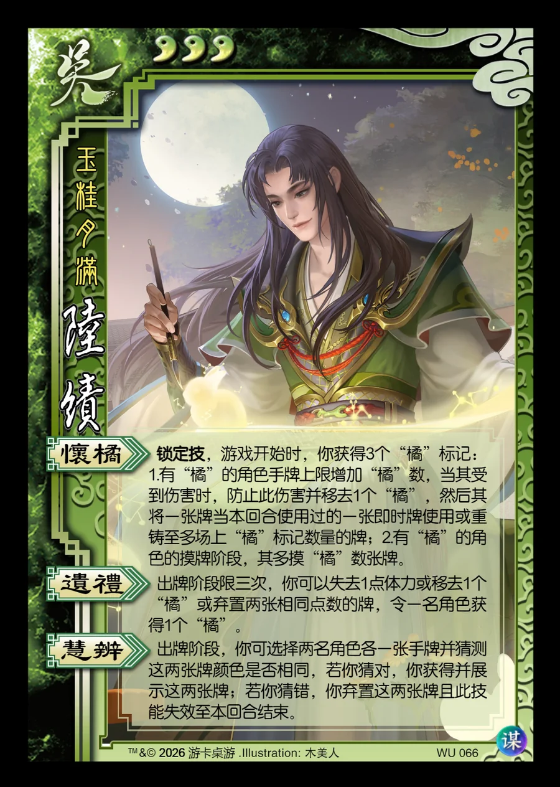

点击卡面查看大图
吴
谋陆绩
♥3玉桂月满
怀橘锁定技
锁定技，游戏开始时，你获得3个“橘”标记：1.有“橘”的角色手牌上限增加“橘”数，当其受到伤害时，防止此伤害并移去1个“橘”，然后其将一张牌当本回合使用过的一张即时牌使用或重铸至多场上“橘”标记数量的牌；2.有“橘”的角色的摸牌阶段，其多摸“橘”数张牌。
遗礼
出牌阶段限三次，你可以失去1点体力或移去1个“橘”或弃置两张相同点数的牌，令一名角色获得1个“橘”。
慧辨
出牌阶段，你可选择两名角色各一张手牌并猜测这两张牌颜色是否相同，若你猜对，你获得并展示这两张牌；若你猜错，你弃置这两张牌且此技能失效至本回合结束。